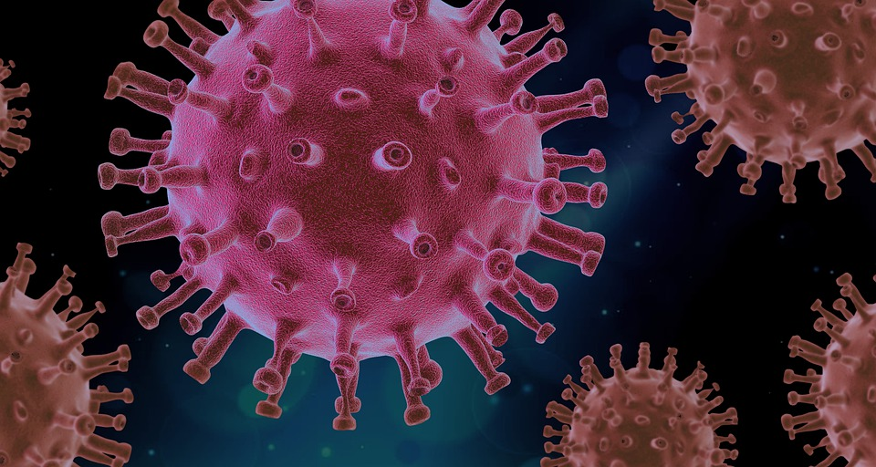

Research Project
According to the CDC, COVID-19 is disproportionately affecting minority groups, with "BAME"
(Black, Asian, and minority ethnic) populations having higher death rates compared to their White counterparts (Public Health England, 2020, p. 4). This disparity in outcomes is
exacerbated by various factors, including limited healthcare access and utilization, poor housing, occupation, health education, and wealth gaps, all of which are interconnected
and worsen the situation (CDC, 2020). However, the most significant contributing factor to the disproportionate impact of COVID-19 on ethnic minorities is socioeconomic status, which
affects all other factors and exacerbates these disparities further. Through this project we will explore how the COVID-19 pandemic has exposed the contributing factors as to why
minority groups were disproportionately affected by something like a global pandemic.
